从 AWS 迁移
本指南面向已在生产环境使用 AWS 解决方案 Dynamic Image Transformation for Amazon CloudFront(v7 serverless 架构)的团队,帮助你在客户端零改动的前提下迁移到 Dynamic Image Transformation for Google Cloud CDN。
整个迁移方案建立在一句话承诺之上:
URL API、签名算法、错误契约与 AWS 逐字段一致(见 兼容性规格说明)。 你的应用、移动端、CMS 模板、已签发的签名 URL 全部原样可用——唯一变化的只是 DNS 记录指向哪里。
本页内容与代码仓库中的
docs/MIGRATION_zh.md
完全一致。
1. 迁移全景
| 阶段 | 做什么 | 客户端影响 | 典型耗时 |
|---|---|---|---|
| 1. 评估 | 盘点 AWS 栈:参数、桶、流量、实际用到的功能 | 无 | 1–2 天 |
| 2. 迁移图片 | S3 → GCS,用 Storage Transfer Service(增量、可重复执行) | 无 | 数小时–数天(取决于数据量) |
| 3. 迁移签名密钥 | 同一把 HMAC 密钥进 Secret Manager → 旧签名 URL 继续有效 | 无 | 几分钟 |
| 4. 部署 GCP 栈 | Launch Wizard 或 Terraform,参数 1:1 对应 | 无 | 约 30 分钟 |
| 5. 验证 | 单测/e2e 套件 + 回放真实生产 URL 做对比 | 无 | 1–2 天 |
| 6. 预签发 TLS 证书 | Certificate Manager DNS 授权,切流之前证书就 ACTIVE | 无 | 约 1 小时 |
| 7. 切流 | 加权 DNS 10% → 50% → 100%,低 TTL,盯错误率 | 无感知 | 1–7 天(灰度观察期) |
| 8. 回滚(如需) | 把 DNS 权重拨回去——AWS 栈一直在运行 | 无感知 | 分钟级 |
| 9. 下线 AWS | 删除 CloudFormation 栈,S3 保留一个观察期后再清 | 无 | 观察期结束后 |
迁移全程两套栈并行运行,没有"一刀切"时刻,也不需要停机窗口。

2. 阶段 1 — 评估现有 AWS 部署
先把当前栈的参数拉出来——它们与本方案 1:1 对应:
aws cloudformation describe-stacks \
--stack-name <your-DIT-stack> \
--query "Stacks[0].Parameters" --output table同时建议收集:
# 图片处理 Lambda 的环境变量(运行时配置的权威来源)
aws lambda get-function-configuration \
--function-name <stack>-ImageHandlerFunction... \
--query "Environment.Variables"
# 生产环境实际用了哪些请求类型/滤镜?
# 拉一天的 CloudFront 访问日志,看路径形态:
# /eyJi... → Default(base64 JSON)
# /fit-in/... → Thumbor
# 其他 → Custom(重写)
aws s3 cp s3://<cf-log-bucket>/<prefix>/ . --recursive --exclude "*" --include "*2026-07*"进入下一阶段前的盘点清单:
| 问题 | 去哪里查 | 决定什么 |
|---|---|---|
| 用了哪些请求类型(Default / Thumbor / Custom)? | CloudFront 日志 | 验证范围;Custom 需要 REWRITE_* 变量 |
SourceBucketsParameter 的值 | CFN 参数 | GCS 桶名 + BUCKET_MAP |
EnableSignatureParameter 是否为 Yes? | CFN 参数 | 密钥迁移(阶段 3) |
| Secrets Manager 密钥名 + JSON key | CFN 参数 | GCP 侧保持同值 |
AutoWebPParameter、CorsEnabledParameter、CorsOriginParameter | CFN 参数 | GCP 侧保持同值 |
| 兜底图桶/key | CFN 参数 | 这个对象也要复制过来 |
| 月请求量 + 缓存命中率 | CloudFront 控制台 → Reports | 成本估算、灰度节奏 |
| 有没有客户端依赖 6 MB / 413 响应上限? | 应用团队 | COMPAT_AWS_LIMITS |
| 指向 CloudFront 的 DNS 记录 TTL | Route 53 | 切流速度;现在就调低 |
提示:项目第一天就把图片域名的 DNS TTL 降到 60 秒。TTL 变更要等一个旧 TTL 周期才全网生效,提前做,等于免费拿到"秒级切流 + 秒级回滚" 能力。
3. 阶段 2 — 参数映射(CloudFormation → Terraform)
Launch Wizard 的交互提示与 Terraform 变量刻意沿用了 CloudFormation 参数命名。完整映射表:
| AWS CloudFormation 参数 | Terraform 变量(infra/terraform) | 容器环境变量(两云一致) | 说明 |
|---|---|---|---|
SourceBucketsParameter | source_buckets | SOURCE_BUCKETS | 逗号分隔;第一个是默认桶 |
CorsEnabledParameter | cors_enabled | CORS_ENABLED | Yes/No |
CorsOriginParameter | cors_origin | CORS_ORIGIN | |
AutoWebPParameter | auto_webp | AUTO_WEBP | 见 §11 差异说明——通过 Vary: Accept 实现 |
EnableSignatureParameter | enable_signature | ENABLE_SIGNATURE | |
SecretsManagerSecretParameter | secret_name | SECRETS_MANAGER | Secret Manager 密钥 ID |
SecretsManagerKeyParameter | secret_key_name | SECRET_KEY | 密钥 JSON 里的 key |
EnableDefaultFallbackImageParameter | enable_default_fallback_image | ENABLE_DEFAULT_FALLBACK_IMAGE | |
FallbackImageS3BucketParameter | fallback_image_bucket | DEFAULT_FALLBACK_IMAGE_BUCKET | 现在是 GCS 桶 |
FallbackImageS3KeyParameter | fallback_image_key | DEFAULT_FALLBACK_IMAGE_KEY | |
DeployDemoUIParameter | deploy_demo_ui | — | 静态桶托管,路径 /demo/ |
(SIH v5 RewriteMatchPattern / 自定义模板) | rewrite_match_pattern / rewrite_substitution | REWRITE_MATCH_PATTERN / REWRITE_SUBSTITUTION | 启用 Custom 请求类型 |
SharpSizeLimit(环境变量) | sharp_size_limit | SHARP_SIZE_LIMIT | |
LogRetentionPeriodParameter | — | — | 在 Cloud Logging 保留策略里设置 _Default 桶 |
CloudFrontPriceClassParameter | — | — | 无需对应:Cloud CDN 全球单一价目表 |
LambdaMemorySizeParameter | — | — | Cloud Run 默认 1 vCPU / 1 GiB;需调整改 modules/cloud-run |
| —(GCP 新增) | bucket_map | BUCKET_MAP | s3桶名=gcs桶名 别名——见下文,迁移的关键辅助 |
| —(GCP 新增) | compat_aws_limits | COMPAT_AWS_LIMITS | Yes 时复刻 Lambda 6 MB / 413 TooLargeImageException 限制 |
BUCKET_MAP — 让 URL 里的 S3 桶名继续可用
如果你的生产 URL 内嵌了桶名——Default 请求 JSON 里带
"bucket" 字段,或 Thumbor/Custom 路径形如
/my-s3-bucket:photos/cat.jpg——这些是 S3 桶名,GCS 上大概率不存在
(桶名全局唯一,很难原名迁移)。你不需要重新生成任何 URL,
只需配置:
bucket_map = "my-s3-bucket=my-project-images,other-s3-bucket=my-project-other"所有指名 my-s3-bucket 的请求会被透明地转到 GCS 桶
my-project-images。显式的 s3:my-s3-bucket:key
前缀同样接受并映射。白名单校验(SOURCE_BUCKETS)作用在
映射后的桶名上,与 AWS 语义一致。
4. 阶段 3 — 复制图片(S3 → GCS)
推荐 Storage Transfer Service—— 全托管、并行、带校验和,不用自己搭中转机,最重要的是可重复/增量: 先跑一次全量,之后随时重跑(或按天调度),把切流前写入 S3 的新图持续同步过来。
# 给迁移用的一次性 AWS 凭据(S3 只读即可)
cat > /tmp/aws-creds.json <<'EOF'
{"accessKeyId": "AKIA...", "secretAccessKey": "..."}
EOF
# 目标桶(Terraform 也会为你创建 <prefix>-source;
# 任何列入 SOURCE_BUCKETS 的桶都可以)
gcloud storage buckets create gs://my-project-images \
--location=asia-southeast1 --uniform-bucket-level-access
# 全量复制 + 之后的增量重跑(只复制新增/变更对象)
gcloud transfer jobs create s3://my-s3-bucket gs://my-project-images \
--source-creds-file=/tmp/aws-creds.json \
--name=dit-migration-images
# 随时增量重跑:
gcloud transfer jobs run dit-migration-images小桶(几 GB 以内)直接在装了两套 CLI 的机器上普通拷贝即可:
aws s3 sync s3://my-s3-bucket /tmp/images && \
gcloud storage cp -r /tmp/images/* gs://my-project-images/验证前先核对对象数量并抽查校验和:
aws s3 ls s3://my-s3-bucket --recursive --summarize | tail -2
gcloud storage ls -r gs://my-project-images/** | wc -l如果 ENABLE_DEFAULT_FALLBACK_IMAGE=Yes,别忘了把
兜底图对象也复制过来。
对象 key 必须保持一致。方案按 URL/JSON 里出现的精确 key 取对象——复制过程中不要改名、加前缀或拍平目录结构。
5. 阶段 4 — 迁移签名密钥
如果 EnableSignature 为 No,跳过本节。
签名是 HMAC-SHA256(path + 排序后的 query) 的 hex 摘要——
同一把密钥在两朵云上算出同样的签名,所以把密钥迁过来,所有
已签发的签名 URL(包括嵌在邮件、App 里的长期链接)继续有效。把密钥 JSON
原样复制:
# 从 AWS Secrets Manager 取出原始 JSON 文档
aws secretsmanager get-secret-value \
--secret-id <SecretsManagerSecretParameter> \
--query SecretString --output text > /tmp/dit-sig.json
# 例如 {"signatureKey":"<hex-or-passphrase>"}Terraform 栈会替你创建 Secret Manager 密钥——apply 时把文档传进去 (永远不要提交到代码库):
terraform apply -var-file=example.tfvars \
-var "signature_secret_json=$(cat /tmp/dit-sig.json)"secret_key_name 保持与 AWS 的
SecretsManagerKeyParameter 一致(JSON key,如
signatureKey)。完成后删除 /tmp/dit-sig.json 和
/tmp/aws-creds.json。
6. 阶段 5 — 部署 GCP 栈
两条部署路径任选——它们驱动同一套 Terraform 模块:
- Launch Wizard(CloudFormation 风格交互式问答):
infra/launch-wizard/launch-wizard.sh——每个提示项都对应它 替代的 CFN 参数。支持--dry-run。 - Terraform 直接部署:
infra/terraform/+ tfvars 文件。
迁移场景的 terraform.tfvars 长这样:
project_id = "my-project"
region = "asia-southeast1"
domain = "img.example.com" # 与 CloudFront 今天服务的是同一个域名
source_buckets = "my-project-images"
bucket_map = "my-s3-bucket=my-project-images"
auto_webp = "Yes" # 照抄你的 AWS 参数值
cors_enabled = "No"
enable_signature = "Yes"
secret_name = "dit-signature-secret"
secret_key_name = "signatureKey"
compat_aws_limits = "No" # 只有客户端依赖 6 MB/413 行为时才设 "Yes"部署后记下输出——阶段 7 会用到 lb_ip:
cd infra/terraform
terraform init
terraform apply -var-file=terraform.tfvars \
-var "signature_secret_json=$(cat /tmp/dit-sig.json)"
terraform output # api_endpoint、lb_ip、cloud_run_url ...domain 的 Google 托管证书在 DNS 指向 LB 之前会一直处于
PROVISIONING——这是预期行为,不阻塞验证:
阶段 6 走 LB IP/HTTP 或预签发的 Certificate Manager 证书(阶段 7a),
完全不需要为了测试而提前切 DNS。
7. 阶段 6 — 切流前的验证
7.1 跑内置测试套件
deployment/run-unit-tests.sh # 299 个单元测试
BASE_URL=http://<lb_ip> deployment/run-e2e-tests.sh # 针对线上栈的 7 个 e2e 测试7.2 回放真实生产 URL(影子对比)
最强的信号来自你自己的流量。从一天的 CloudFront 访问日志里提取最高频的
图片路径(第 8 列是 cs-uri-stem),对两套栈逐一回放,对比状态码、
Content-Type 和像素:
# 生产环境 top-1000 路径
zcat *.gz | awk -F'\t' '$8 ~ /^\// {print $8}' | sort | uniq -c | sort -rn \
| head -1000 | awk '{print $2}' > paths.txt
AWS=https://img.example.com # 此时仍指向 CloudFront
GCP=http://<lb_ip> # 或用预签发证书走 https
while read -r p; do
a=$(curl -s -o /tmp/a -w '%{http_code} %{content_type}' "$AWS$p")
g=$(curl -s -o /tmp/g -w '%{http_code} %{content_type}' "$GCP$p" -H "Host: img.example.com")
if [ "$a" != "$g" ]; then echo "HEADER-DIFF $p aws[$a] gcp[$g]"; fi
# 可选的像素级对比(不同编码器版本字节数会略有差异):
# compare -metric AE /tmp/a /tmp/g null: 2>&1
done < paths.txt预期结果:
- 状态码、错误 JSON 体、
Content-Type——必须 完全一致。 - 字节大小——可能略有差异(sharp/libvips 编码器版本漂移); 视觉输出应当等价。用像素 diff,不要用字节 diff。
smartCrop输出——Cloud Vision 与 Rekognition 的人脸框略有不同;裁剪结果等价但非字节一致。人工抽查即可。
7.3 一致性核对清单
- ☐ 生产在用的每种请求类型(Default / Thumbor / Custom)各取一条 URL,返回 200
- ☐ 用你现有 AWS 签名代码生成的签名 URL 在 GCP 侧验签通过
- ☐ 不存在的 key 返回
404 {"status":404,"code":"NoSuchKey",...} - ☐ 篡改签名返回
403 SignatureDoesNotMatch - ☐
AUTO_WEBP:带Accept: image/webp的请求返回image/webp,不带则返回原格式,且响应携带Vary: Accept - ☐ 兜底图行为(若启用)一致
- ☐ CDN 缓存生效:对同一 URL 连发两次
GET→ 第二次带Age头(Cloud CDN 不缓存HEAD——别用curl -I测)
8. 阶段 7 — 切流
8a. 预签发 TLS 证书(零停机的前提)
Terraform 创建的经典 Google 托管证书要等 DNS 指向 LB 之后才能激活 ——对零停机迁移是个先有鸡还是先有蛋的问题。用 Certificate Manager DNS 授权解决:通过一条一次性 CNAME 证明 域名所有权,在 CloudFront 仍承载 100% 流量时就把证书签出来:
gcloud certificate-manager dns-authorizations create dit-authz \
--domain=img.example.com
gcloud certificate-manager dns-authorizations describe dit-authz \
--format="value(dnsResourceRecord.name,dnsResourceRecord.data)"
# → 把这条 CNAME 加到你的 DNS(不影响正在服务的流量)
gcloud certificate-manager certificates create dit-cert \
--domains=img.example.com --dns-authorizations=dit-authz
gcloud certificate-manager maps create dit-cert-map
gcloud certificate-manager maps entries create dit-cert-map-entry \
--map=dit-cert-map --certificate=dit-cert --hostname=img.example.com
# 把证书 map 挂到 Terraform 创建的 HTTPS 代理上
# (证书 map 优先级高于代理上的经典证书)
gcloud compute target-https-proxies update <prefix>-https-proxy \
--certificate-map=dit-cert-map等 gcloud certificate-manager certificates describe dit-cert
显示 ACTIVE 后,先对 LB IP 验证 HTTPS 可用,再动 DNS:
curl -sv --resolve img.example.com:443:<lb_ip> \
https://img.example.com/<any-test-path> -o /dev/null8b. 加权 DNS 灰度
两侧证书都就绪后,逐步切流(以 Route 53 为例):
# 10% GCP / 90% CloudFront——同一域名下两条加权记录:
# img.example.com A <lb_ip> weight 10, set-id "gcp"
# img.example.com ALIAS dxxxx.cloudfront.net weight 90, set-id "aws"10% 观察一天,两侧都盯着,然后 50%,再 100%。全程 TTL 保持 60 秒。
灰度期间 GCP 侧盯什么:
# LB:所有 4xx/5xx(和你的 CloudFront 基线比,不是和零比)
gcloud logging read 'resource.type="http_load_balancer"
httpRequest.status>=400' --freshness=1h --limit=50 \
--format="table(httpRequest.status,httpRequest.requestUrl)"
# Cloud Run:应用错误
gcloud logging read 'resource.type="cloud_run_revision"
resource.labels.service_name="<prefix>-image-handler" severity>=ERROR' \
--freshness=1h --limit=50同时关注:Cloud CDN 缓存命中率(控制台 → 网络服务 → Cloud CDN → 监控)—— 从接近 0% 起步,随缓存预热几小时内应爬向你的 CloudFront 基线;Cloud Run p95 延迟与实例数。
缓存预热。冷 CDN 意味着每个 URL 在每个边缘节点的首个请求
要付完整的转换成本。10% 灰度下这基本无感;如需更稳,可在提升权重前用阶段
7.2 的 paths.txt 对新端点 GET 一遍 top-N URL 预热。
8c. 冻结,然后迁移写入路径
灰度期间让 S3→GCS 传输任务按计划持续跑,新上传的图两边都有。到 100%
之后:把上传/写入路径(CMS、媒体流水线)指向 GCS,最后跑一次
gcloud transfer jobs run 清掉尾差,然后停掉任务。
9. 回滚预案
回滚只是一次 DNS 权重变更,仅此而已:
- 把 CloudFront 记录权重拨回 100 / GCP 拨到 0(≤ TTL = 60 秒内生效)。
- 迁移全程从未改动或缩容 AWS 栈——它直接恢复承载。
- 如果已经把写入路径切到 GCS,重试前需把切换后写入 GCS 的图片反向同步回
S3(反向
aws s3 sync或反向传输任务)——这是唯一需要对账的 状态,且仅在已迁移写入路径时才存在。
这份回滚能力要保留到观察期结束(通常 100% 流量后再跑 1–2 周)。
10. 阶段 9 — 下线 AWS
观察期结束后:
# 1. 删除 AWS 侧的加权 DNS 记录(留一条普通记录 → GCP LB IP)
# 2. 删除解决方案栈
aws cloudformation delete-stack --stack-name <your-DIT-stack>
# 3. 释放未随栈删除的 ACM 证书 / CloudFront 分发
# 4. S3 桶只读保留一个窗口期(30–90 天)后删除。GCS 从此是唯一数据源。
aws s3api put-bucket-policy ... # 可选:保留期内拒绝写入成本核对:AWS 侧残余账单应只剩 S3 存储;把 GCP 第一个完整月的账单和 部署规划的估算对一下。
11. 需要了解的行为差异
完整契约见 兼容性规格说明。 以下差异都不需要改客户端,但运维和测试需要知道:
| 方面 | AWS | GCP(本方案) | 影响 |
|---|---|---|---|
| WebP 变体缓存 | CloudFront 缓存策略把 Accept 头放进缓存键 | Cloud CDN 禁止 Accept 进缓存键 → 服务发出 Vary: Accept,Cloud CDN 原生缓存变体 | 客户端无感;若你自建 CDN 探测,AUTO_WEBP=Yes 时预期响应带 Vary: Accept |
HEAD 请求 | CloudFront 从缓存响应 | Cloud CDN 只缓存/回源 GET——HEAD 永远打到源站 | 监控和缓存测试用 GET(别用 curl -I) |
| 最大响应体 | 6 MB(Lambda 限制)→ 413 TooLargeImageException | 32 MB(Cloud Run) | 严格更宽松;客户端依赖 413 行为时设 COMPAT_AWS_LIMITS=Yes |
人脸检测(smartCrop) | Amazon Rekognition | Cloud Vision FACE_DETECTION | 行为等价,人脸框略有差异 → 裁剪非字节一致;Vision(和 Rekognition 一样)对画作/插画中的人脸可能检测不到 |
| 内容审核 | Rekognition 审核标签 | Vision SAFE_SEARCH_DETECTION,likelihood 映射为 0–100 置信度,接受常见标签别名 | 请求/响应形态一致 |
| 冷启动 | Lambda 每请求独立沙箱 | Cloud Run 实例并发处理请求;可配 min_instances | 缓存未命中突发时冷启动通常更少 |
| 日志与指标 | CloudWatch | Cloud Logging / Cloud Monitoring | 重建看板和告警(查询语句见 §8b) |
| 计价模型 | CloudFront price class | Cloud CDN 全球单一价目表 | 忘掉 CloudFrontPriceClass 即可 |
| URL 里的桶名前缀 | 接受 s3: | 同时接受 s3: 和 gs:;BUCKET_MAP 别名 S3 桶名 | 旧 URL 原样可用 |
12. 最佳实践清单
- ☐ 第一天就把 DNS TTL 降到 60 秒——切流和回滚都变成秒级操作。
- ☐ 绝不重新生成签名 URL——迁移密钥(阶段 4)就够了。
- ☐ 用 Storage Transfer Service 并加调度,不要一次性拷贝——否则拷贝与切流之间的增量就是你的数据丢失窗口。
- ☐ 用 DNS 授权预签发证书——永远不要让证书签发卡住切流。
- ☐ 首次部署所有参数值与 AWS 保持一致(尤其
AUTO_WEBP、CORS_*、签名相关)。想改进,等迁移稳定后一次改一个变量。 - ☐ 用生产 URL 验证,不要只跑合成测试(阶段 7.2)。
- ☐ 加权 DNS 灰度,4xx/5xx 比率和你的 CloudFront 基线比,不是和零比。
- ☐ 观察期结束前不要下线 AWS——回滚必须始终是一个 60 秒操作。
- ☐ 先迁读路径,最后迁写路径(阶段 8c)。
- ☐ 删掉凭据/密钥临时文件(
/tmp/dit-sig.json、/tmp/aws-creds.json),永远不要提交到代码库。
13. FAQ
应用里的图片 URL 需要改吗?
不需要。三种请求类型、签名方案、expires、错误体和响应头完全一致。
内嵌 S3 桶名的 URL 由 BUCKET_MAP 处理。
两套栈能长期并行(多云)吗?
可以——灰度阶段本身就是多云并行。唯一的持续要求是保持源图片 S3⇄GCS 同步。
客户端用 AWS SDK 代码签 URL,还能用吗?
能。签名就是共享密钥的 HMAC-SHA256(path[?sorted-query]) hex 摘要——
里面没有任何 AWS 专有的东西。同一把密钥,同样的签名。
全量拷贝之后又上传到 S3 的图怎么办?
重跑 Storage Transfer Service 任务(或按小时/天调度)。它只复制新增/变更对象。
我们用了 Custom 请求类型和重写正则。
把 rewrite_match_pattern / rewrite_substitution 设成
与 AWS 模板相同的值,语义完全一致。
Demo UI 也能迁过来吗?
deploy_demo_ui = true 会在 /demo/ 部署等价的 demo。
和 AWS 版一样,仅供评估,不建议生产使用。